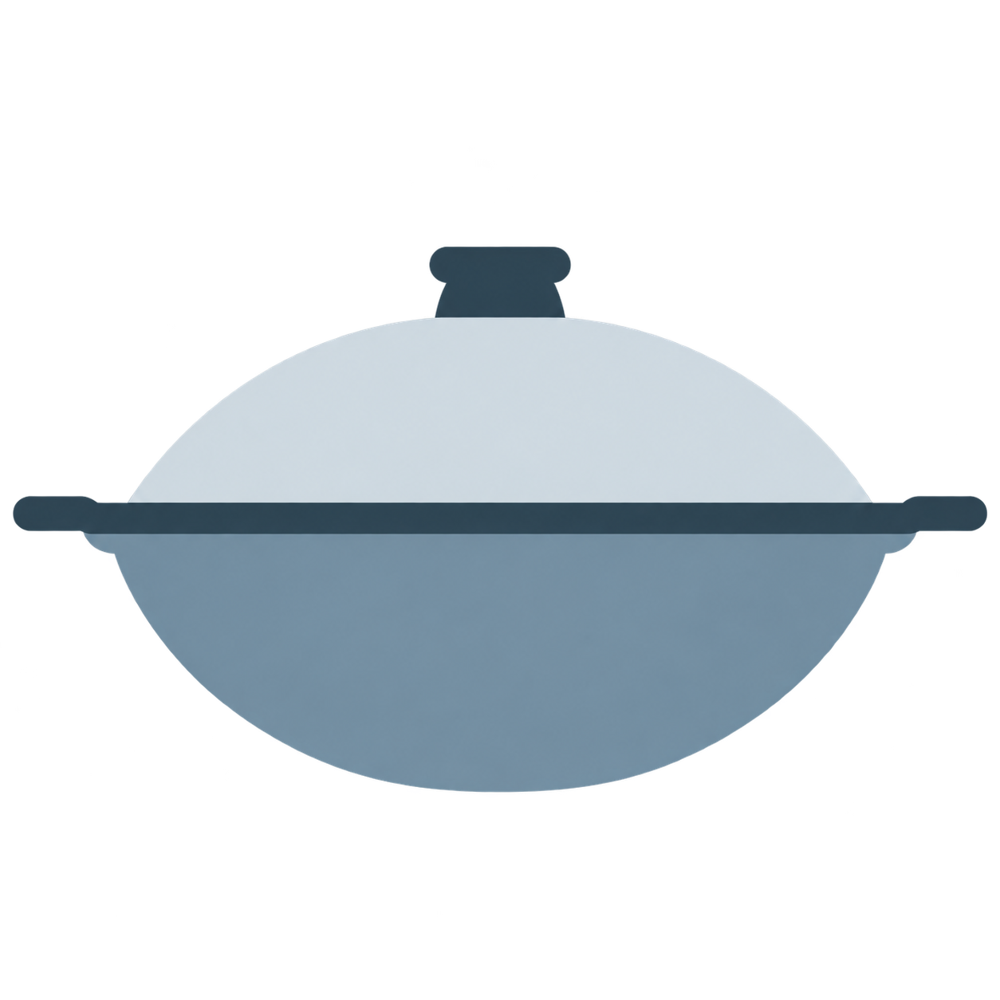

Impressum
Jürgen Malinowski
Grüner Jäger 1
38159 Vechelde
Deutschland
Hinweis zum Projekt
Diese Website ist ein Portfolio-Demoprojekt. Es werden keine echten Bestellungen verarbeitet.
(C) Jürgen Malinowski, 2025-2026
Bewertung (4.8 von 5 Sternen)

Jürgen Malinowski
Grüner Jäger 1
38159 Vechelde
Deutschland
Diese Website ist ein Portfolio-Demoprojekt. Es werden keine echten Bestellungen verarbeitet.
(C) Jürgen Malinowski, 2025-2026